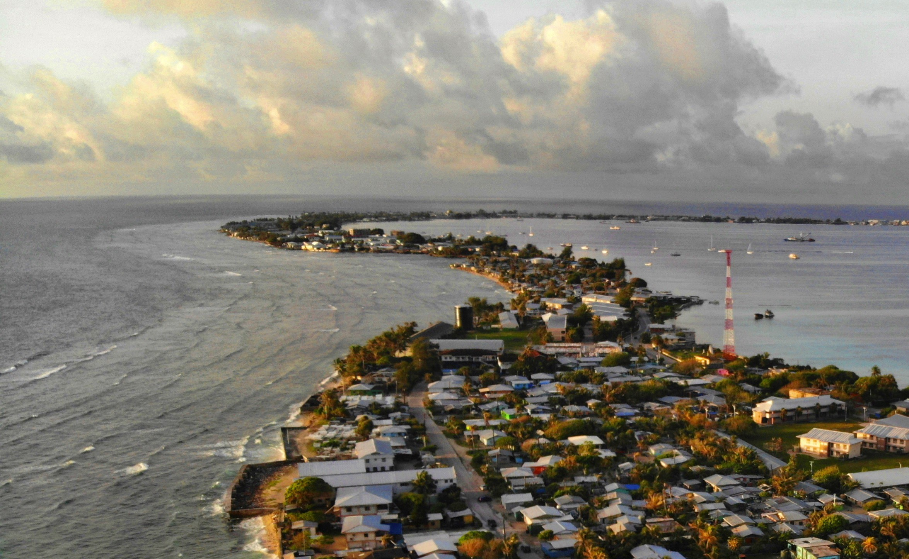
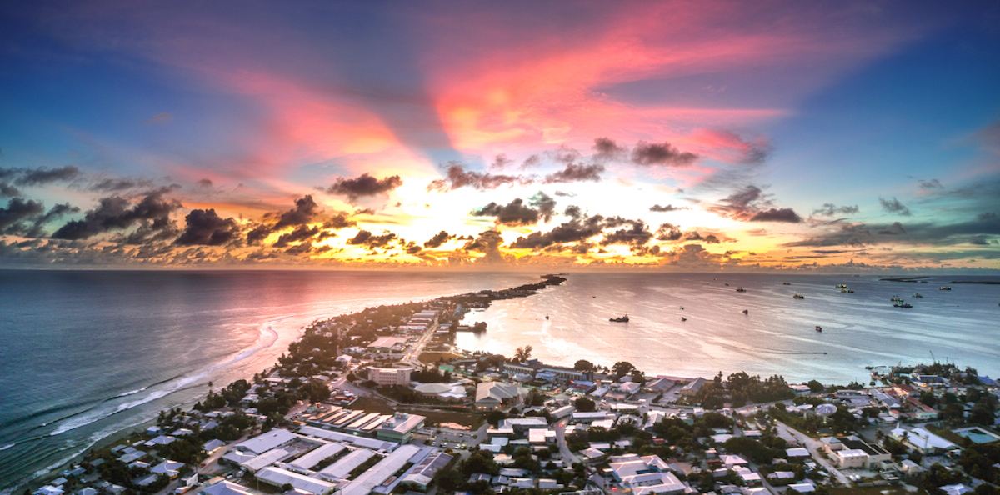
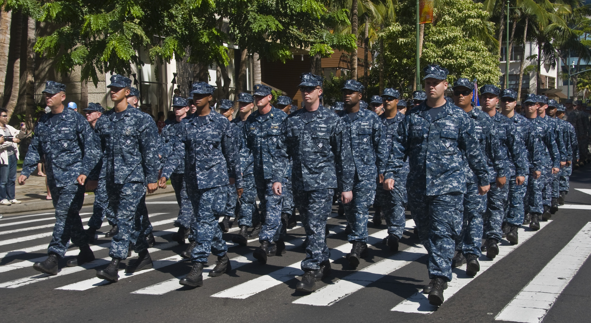
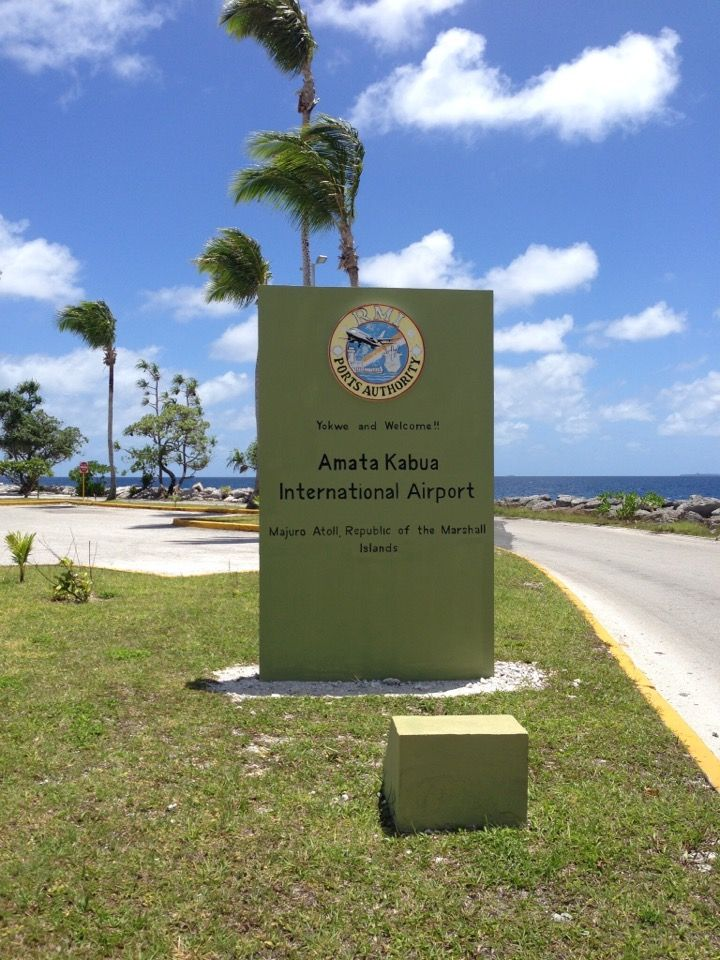
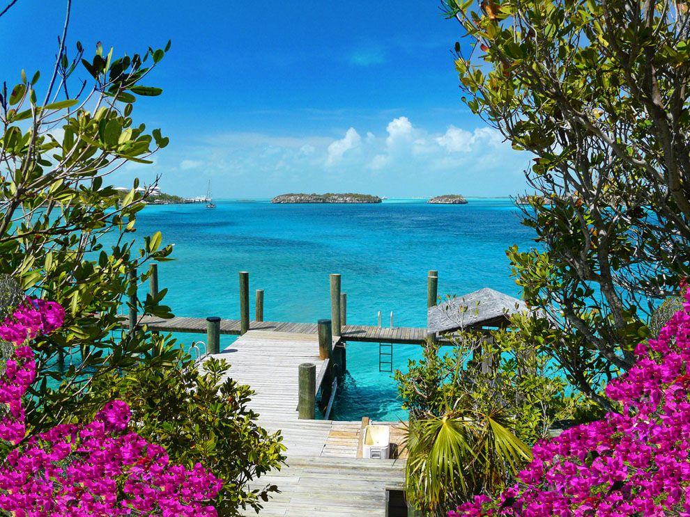

The Marshall Islands
An idyllic landscape.

Looks like you're using a mobile device or a really small screen. Due to issues with formatting, I've set a constraint that the screen size must be at least 1000 CSS pixels wide.
|
The Marshall Islands is a tiny island nation situated in the Pacific Ocean. Formerly admistered by the US government, as of 1986 it is an independent country. It has been both a World War II battleground and a nuclear test site. Out of all UN recognized countries, it has the highest water to land ratio. |
 |
|  |
The Marshall Island's relative location is halfway between Australia and Hawaii. It's slightly west of the international date line in global terms (it's still several hundred miles, a lot in human terms), making it among the first countries in the world to experience a new day with a time zone of GMT+12 (though that's only symbolic, as the international date line has no scientific significance). On the absolute side, it's located at 7.08971ºN, 171.38027ºE. The Marshall Islands also helps the rest of the world find their location—Kwajalein Atoll hosts one of the four dedicated ground antennas for the world's GPS system. |
|
The Marshall Islands has several natural resources. It produces the commodities of coconuts, tomatoes, melons, taro, breadfruit, pigs, and chickens. Industries there are also numerous: people there process coconuts and tuna fish; tourism is also a factor of income; and making craft items, especially those that use materials that originate from the sea such as sea shells and pearls, is also a way of life for many there. The underwoods in coconut plantations have also been used as grazing areas for several species of animals; however, livestock usage has since declined. As many island nations have it, the Marshall Islands also relies heavily on the sea, which has for many years provided its residence with their meals. Wildlife there is also plentiful, all five species of marine turtles are present in the Marshall Islands. The people there are also of diverse religious backgrounds, though Protestants form a large majority making up over 2 in 5 people. Roman Catholics then make up the next largest sect, forming around 8.5% of the populations. The same diversity, however, could not be said about ethnicity there. 92% of the people there are Marshallese, and 5.9% are mixed Marshallese. Only about 1 in 50 people do not belong to either of those ethnic groups. |

|
|
The Marshall Islands are a prominent place used in war. Kwajalein Atoll is a famous World War II battle site. It has since also remained a military area—it is still a US missile test range. Before, when it was still administrated by the US, some isles were used for nuclear tests—67 of them. Because of the lasting damage caused by the USA's nuclear testing, the US continues to pay the Marshall Islands compensation. This military tie to the US also may be a reason that, to this day, the Marshall Islands still rely on the US for defense. |
 |
|  |
The Marshall Islands hosts 15 airports. Of the airports, only 4 of them have paved runways, showing the isolation of this tiny country. The other 11 only have unpaved runways. The Marshall Islands has several seaports, with ones on Majuro Atoll, Kwajalain Atoll, and Enitwetak Island. Communication to the outermost islands is radio-only. Unlike many other countries, it does not have any local TV stations. |
|
The Marshall Islands is located in Oceania (a region within the Pacific Ocean, the world's largest ocean), which includes (but is not limited to) Australia, New Zealand, Fiji, Guam, and several other island countries. It's also in the tropics, as its latitude is only 7 degrees north from the equator. |
 |
Here are some images.